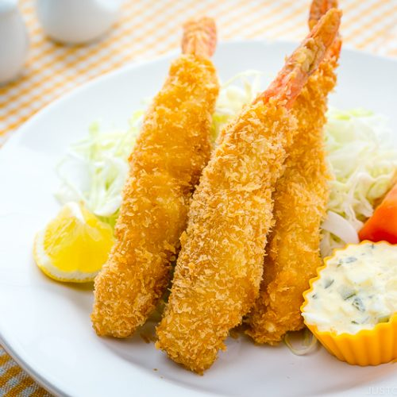

Crunchy Fried Shrimp

These fried shrimp have just the right amount of crunch
thanks to the panko bread crumbs.
If desired, serve with Kikkoman Tonkatsu Sauce for dipping.
Ingredients
- Flour
- Seasonings
- Eggs
- Bread crumbs
- Shrimp
- Oil
Directions
- Mix flour, salt, and pepper in a medium bowl. Beat eggs in a second medium bowl until frothy. Place bread crumbs in a third bowl.
- Dredge shrimp in the flour mixture, then shake off excess. Dip shrimp into beaten eggs, then press shrimp into bread crumbs, turning to coat both sides.
- Heat 2 inches oil in a large, heavy pot to 350 degrees F (175 degrees C).
- Deep-fry shrimp in batches in the hot oil until cooked through, about 1 minute. Use tongs to transfer shrimp to a paper towel-lined plate to drain. Repeat to cook remaining shrimp.
- Arrange shrimp on a platter to serve.